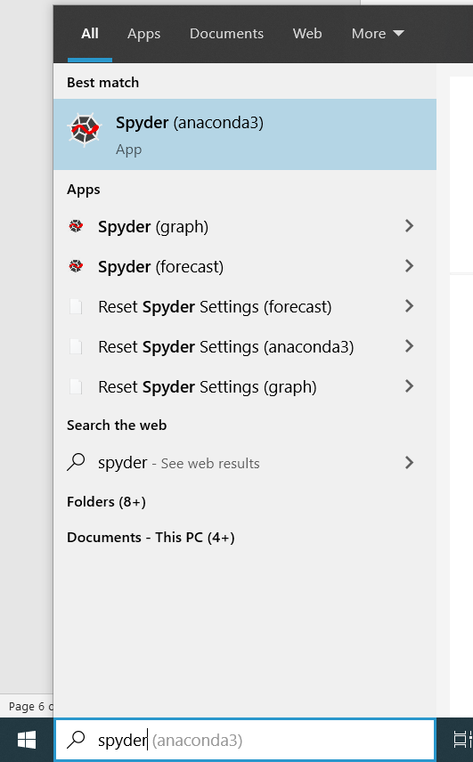

Anaconda Installation Guide
Dear Learners,
Below you may find the steps to download and install Anaconda in your PC.
FAQ – What is Anaconda and why are we using it?
- Anaconda is a free and open-source distribution of the Python programming language
- Anaconda come with many packages along with Python, which is essential for data analysis and data science work
Section 1: Download Anaconda Installer
-
Follow this link. Scroll down to the section “Anaconda Installers” and click on “64-Bit Graphical Installer” as shown in the screenshot below.

2. Click “Save” to start downloading the Anaconda Installer

Section 2: Install Anaconda
Once you have downloaded the installer, you can launch the installer and follow the instructions as prompted.
-
Navigate to the directory where the Anaconda Installer is downloaded. Double click on the installer as shown in the screenshot below.

-
Click Next

-
Click Next

-
Click Next

-
Click Install

-
Wait for it to run, it may take 5-10minutes. Click Next when it is completed.

-
Untick both boxes and click Finish

Section 3: Running Python Integrated Development Environment (IDE)
With Anaconda installed, two Python IDE – Jupyter Notebook and Spyder is automatically installed as well. We strongly recommend beginners to start writing Python codes using Jupyter Notebook.
3.1: Launch Jupyter Notebook
To launch Jupyter Notebook, type “jupyter” in your PC’s search box and click on “Jupyter Notebook”

3.2: Launch Spyder
To launch Spyder, type “spyder” in your PC’s search box and click on “Spyder” 
Section 4: Install R Studio and Visual Studio Code using Anaconda
Last Updated: 7 September 2020
Anaconda Version: Anaconda Individual Edition 2020.07
Python Version: 3.8